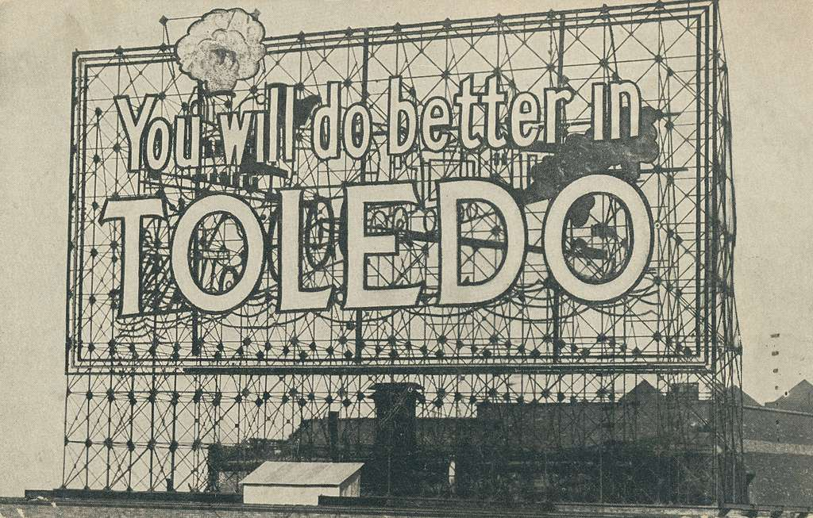

"Only in Toledo"? Hardly: How Negativity Is Hurting Our City
Every city has crime, weird headlines, and idiots. Toledo isn't unique—but the way we talk about our city might be. Here's why the "Only in Toledo" mindset does more harm than good.